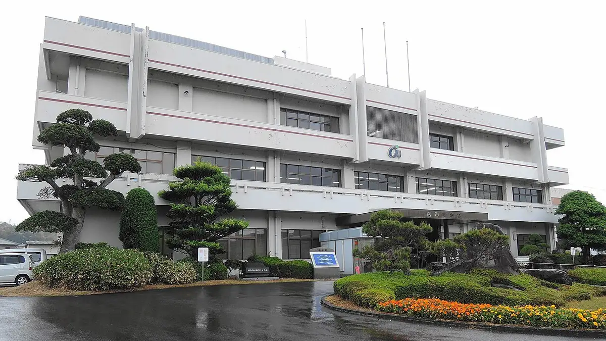
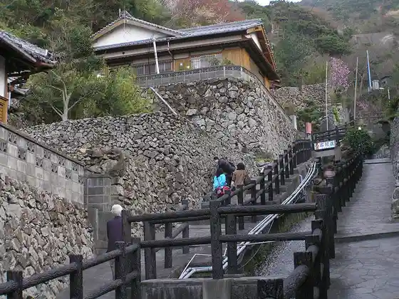
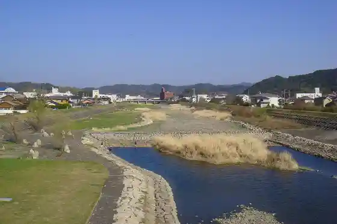
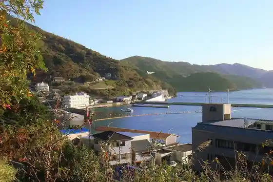
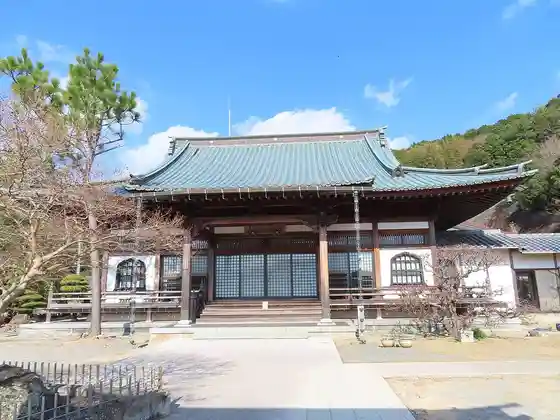

Ainan
Ainan · Ehime
Ainan
Highlighted on the Ehime map.

Stay
Hotel Serekuto Ehime Ainan
Uwami National Park Aoi Kuni Hotel
HOTEL AZ Ehime Ainan Mise
Ipponmatsu Onsen Akebo no So
Dining
Izakaya Hana Karuta
Teppan Kameo
Amberu
Sake Tokoro Ozaki
Kisetsu Sono
Bachikoi
Dandan Kan
Ikeda Ya
Kissa Arupusu
Mikan Shokunin Takeda Ya
Sake Sai Ie Yu Zu
Sumiyaki Ki Fune Nami
Shirotsubaki
Roadside Station Misho MIC
Ainan Market Shokudo
O Konomi Yaki Hira no
Onsen
Hotel Serekuto Ehime Ainan Furo
Ipponmatsu Onsen Akebo no So Furo
Sights
Ainan Town Hall
Gaihaku Ishigaki Village

Sozu Kawa

Funakoshi (Saikai)

Hikari Zendera Hondo

Shidenkai Tenjikan